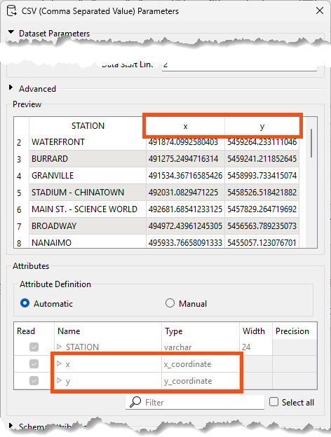

We provide videos in this course if you prefer to watch them instead of reading the text below. Note that the video uses an older release of FME and some Quiz answers might require you to read the text.
After completing this lesson, you'll be able to:
We provide videos in this course if you prefer to watch them instead of reading the text below. Note that the video uses an older release of FME and some Quiz answers might require you to read the text.
Using the reader parameters to create point geometry works well if you are working with spatial data from the start. This method occurs automatically in certain readers (e.g., CSV, Excel, and text) as long as the attributes are named correctly, such as latitude, longitude, and elevation, or x, y, and z.
Open FME Workbench (2024.2 or later).
Click Blank Workspace to start a new workspace.
Click Readers > Add Reader and set Format to CSV (Comma-Separated Value). Click the ellipsis button [...] and select the downloaded rapid_transit_stations.csv file or paste in the URL.
Set the Coord. System to UTM83-10.
Then click the Parameters button.
Confirm that the Attribute Definition has x and y, set to x_coordinate and y_coordinate, respectively.
FME will automatically detect x and y coordinates for columns with names like x, y, lat, long, etc. for CSV, Excel, and text formats. If FME does not automatically detect the coordinate columns, switch the Attribute Definition to Manual, then change the X/Y/Z (Longitude/Latitude/Elevation) fields to the x/y/z_coordinate(_coord) data type, click OK until the reader is added to the canvas.

Run the workspace and view the results in Visual Preview:

The output of point features using any of the three methods. Stylized in FME Data Inspector using map tiles by Stamen Design, under CC-BY-3.0. Data by OpenStreetMap, under CC-BY-SA.